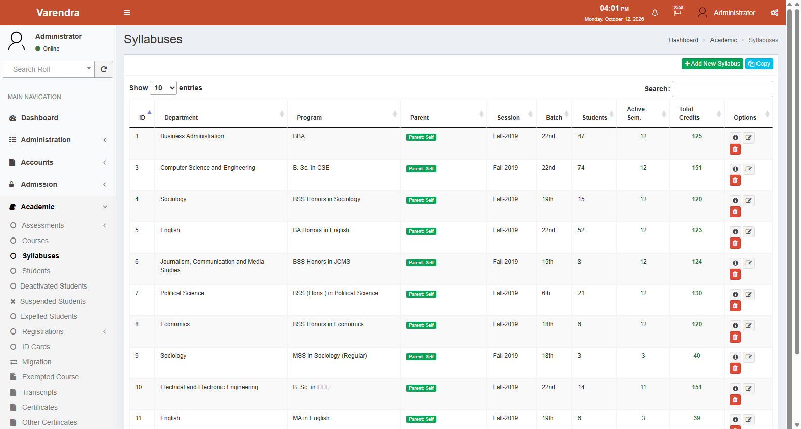
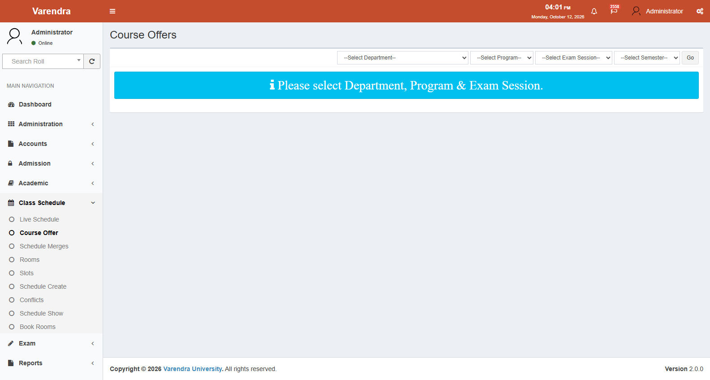
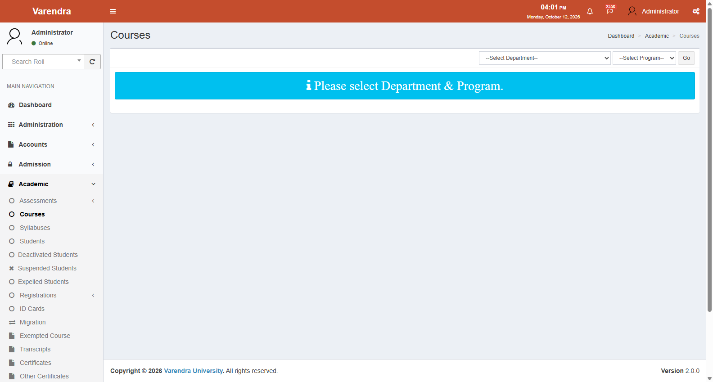

EasyMate ERP — Comprehensive User Manual & Operational Reference
Varendra University
Document Version: 1.0
Audit & Publication Date: October 2026
System Architecture: EasyMate ERP (Laravel Academic & Student Information System)
Verification Baseline: Comprehensive Source Code, Route, Migration, and Policy Audit
Executive Summary & Institutional Scope
This comprehensive user manual provides the authoritative operational reference for EasyMate ERP at Varendra University. It documents end-to-end academic operations, system administration, student admissions, fee structures, examinations, and graduation processing.
Scope Boundaries & HRM Separation
┌────────────────────────────────────────────────────────────────────────────────────────┐
│ SYSTEM SCOPE & BOUNDARIES │
├─────────────────────────────────────────────────┬──────────────────────────────────────┤
│ EASYMATE ERP │ EXTERNAL HRM SYSTEM │
│ (Documented in this Manual) │ (Excluded from Scope) │
├─────────────────────────────────────────────────┼──────────────────────────────────────┤
│ • Public Applicant Portal & Board Data Sync │ • Faculty & Staff Recruitment │
│ • Admission Tests, Merit Lists & Enrollment │ • Employee Attendance Biometrics │
│ • Academic Hierarchy, Syllabuses & Courses │ • Employee Leave Application/Approval│
│ • Class Schedule, Rooms, Slots & Routines │ • Payroll, Salary & Compensation │
│ • Semester Registration (Auto & Manual) │ • Staff Performance Management │
│ • Tuition Invoicing, Waivers & Fee Postings │ • Employee Personal Service Books │
│ • Course Examiners, Marks & Approvals │ │
│ • SGPA/CGPA Calculation & Result Publication │ │
│ • Transcripts, Certificates & Verifications │ │
└─────────────────────────────────────────────────┴──────────────────────────────────────┘
Mandatory Scope Notice: EasyMate ERP manages student academic journeys and institutional curricula. All human resource management, employee payroll, biometric attendance, staff leave, and recruitment operations are executed in an independent external HRM system and are strictly outside EasyMate's scope.
Verification Classifications & Audit Legend
Every feature, screen, and workflow in this manual is evaluated against the following six audit verification categories:
| Status Code | Classification | Meaning & Criteria |
|---|---|---|
| VC | Verified in source code | Logic, route, controller, model, and view confirmed directly in codebase |
| VUI | Verified in the running UI | Visually confirmed and interactively tested in an active running application (0 screens currently verified; pending live capture) |
| PI | Partially implemented | Feature exists in code but contains stubs, partial logic, or incomplete views |
| CNV | Found in code but not UI-verified | Code exists, but layout, rendering, and interaction not verified in runtime |
| RDC | Requires database or policy confirmation | Logic depends on live database records (e.g., active grades table, role IDs beyond 1/7/11) or university policy |
| NF | Not found | Claimed feature or route does not exist in codebase (e.g., HRM routes, standalone /front/student/result) |
All code-verified capabilities are classified as VC CNV until visual captures are recorded in a live environment.
Table of Contents
- Module 1: Functional Inventory
- Module 2: Complete Student Lifecycle
- Module 3: Role-Based Operational Guides
- Module 4: Cross-Module Enterprise Workflows
- Module 5: Glossary, Formulas & Operational FAQ
- Module 6: 90-Screen Interface Inventory & Capture Checklist
- Module 7: Technical Verification Report & Audit Findings
1. Functional Inventory
1.1 Administration Module
Navigation: Main Navigation → Administration | Route File: web_routes_administrator.php
- Faculties (faculties.index): VC CNV Create, edit, list, and view faculties.
- Departments (departments.index): VC CNV Manage academic departments linked to faculties.
- Programs (programs.index): VC CNV Degree programs filtered by user's assigned departments.
- Program Versions (programs.versions.create): VC CNV Sets semesters_per_year (2 or 3), payment_installments (2 or 3), and total_years.
- Waiver Categories (waiver-categories.index): VC CNV Percentage-based scholarship configurations.
- Users & Roles (users.index, roles.index): VC CNV User management, departmental access scopes, random password generation with mandatory reset (password_reset_required = 1).
- Settings (settings.index): VC CNV Global academic dates and program overrides (Setting ID 1: Current Session, IDs 2-5: Deadlines).
- Activity Logs (logs.index): VC CNV Spatie Activitylog audit trails.
- MS Teams Users (mscusers.index): VC CNV Credentials for student Microsoft Teams and Wi-Fi access.
- Smart Cards & Photo Capture (smartcards.index, photocapture.index): VC CNV RFID tracking and photo capture to MinIO cloud storage.
1.2 Admission Module
Navigation: Main Navigation → Admission | Route File: web_routes_admission.php
- Admission Test Configs (admissiontestconfigs.index): VC CNV Program and session test dates, venues, admit card windows, form_online fee toggle.
- Applicants Datatable (applicants.index): VC CNV Applicant records, payment status, board verification status, export to Excel.
- Board Verification: VC CNV Automated Teletalk API integration (BoardData) with scraper fallback (BoardDataScrap). Flags board_data_manual_pending_verification = 1 for manual review in applicants.show.
- Eligibility Checker: VC CNV Automated GPA evaluation against program requirements and third-division checks (has_third_class).
- Merit Lists (admissionmeritlists.index): VC CNV Generation of entrance test merit rankings.
- Applicant-to-Student Transfer (applicants.transfer): VC CNV Converts paid, eligible applicants into permanent Student entities without data re-entry.
1.3 Academic Module
Navigation: Main Navigation → Academic | Route File: web_routes_academic.php
- Students Directory (students.index): VC CNV Master directory, roll number assignment, login profile generation.
- Exempted Courses (exemptedcourses.index): VC CNV External credit transfers; credits count toward degree but excluded from CGPA point calculation.
- Syllabuses & Courses (syllabuses.index, courses.index): VC CNV Theory vs Sessional/Lab classification, elective group tracks (group_id).
- Semester Registrations (registrations.index): VC CNV Manual course enrollment, section assignments, redo, semester drop.
- Auto-Registration Engine (autoregistrations.index): VC CNV Cohort auto-registration enforcing 50% earned credit rule, prerequisite checks, consecutive session checks, and 7-year degree limit.
- Student Status Records: VC CNV Deactivated students (disabledstudents), suspensions (suspendedstudents), expulsions (expelledstudents), migrations (studentmigrations).
- Transcripts & Certificates: VC CNV Partial transcripts, final transcripts, provisional certificates, testimonials, migration certificates, MOI certificates.
- Document Applications (documentapplications.index): VC CNV Multi-department clearance workflow: Student Application → Invoice Paid → Accounts Clearance → Library Clearance → Ready → Delivered.
1.4 Accounts Module
Navigation: Main Navigation → Accounts | Route File: web_routes_accounts.php
- Fee Settings (feesettings.index): VC CNV Fee rates by Account Head, Program, and Session.
- Tuition Billing (GenerateInvoice.php): VC CNV Automated calculation: Regular Tuition (Rate × Credits), Retake Tuition (Rate × 50% × Credits), Improvement Tuition (Rate × 25% × Credits).
- Scholarship Waivers (WaiverCalculator.php): VC CNV Evaluates auto-waiver vs manual waiver, awarding the higher percentage strictly against regular tuition.
- Invoices & Sequential Payments (invoices.index, invoices.posting): VC CNV Strict sequential payment rule: Installment 1 must be paid before Installment 2 can be posted.
- Student Ledgers (ledgers.index): VC CNV Double-entry Debit (D) and Credit (C) ledger with real-time balance resolution.
- Late Fees (Invoice.php): VC CNV Accrues at 50 BDT/day, excluding holidays recorded in the Holiday table.
1.5 Examination Module
Navigation: Main Navigation → Exam | Route File: web_routes_exam.php
- Assessment Rules (assessmentrules.index in Academic): VC CNV Component weight allocations (Attendance, CT, Midterm, Final).
- Course Examiners (examiners.index): VC CNV Maps instructors to course offerings with marks entry authorization.
- Marks Entry & Submission (marks.index, marks.submit): VC CNV Inputs component scores; attendance status flags p (Present), a (Absent), e (Expelled). Submission locks instructor editing.
- Controller Approval (marks.approve): VC CNV Commits CourseResult records with Letter Grades and Grade Points via Grade::calculate().
- Result Publication (results.create): VC CNV Enforces all-course approval gate (Submission::checkApproval); computes SGPA and cohort ranks.
- Administrative Undo (marks.undo): VC CNV Admin-only reversal facility reopening locked/approved submissions.
1.6 Class Schedule Module
Navigation: Main Navigation → Class Schedule | Route File: web_routes_schedule.php
- Rooms & Slots (rooms.index, slots.index): VC CNV Physical lecture rooms, computer labs, and time slot periods.
- Course Offers & Merges (courseoffers.index): VC CNV Section splits and instructor mappings.
- Routine Builder & Conflicts (schedules.create, schedule.conflicts): VC CNV Grid scheduling with collision detection for teacher or room double-bookings.
- Live Routine Sync (schedules-live.index): VC CNV Syncs draft routine to live student/teacher portals; generates PDF.
- Room Booking (room_booking.index): VC CNV Event-based ad-hoc room reservations.
1.7 Reports Module
Navigation: Main Navigation → Reports | Route File: web_routes_report.php
- Registration Reports: Summary, dropouts, individual registrations, non-collegiate attendance lists, section rosters.
- Accounts Reports: Receivables, bank-wise collections, pending installments, revenue summaries.
- Student Reports: Enrollment demographics, completed graduates, studying cohorts, blood donors, batch summaries.
- Admission Reports: Forms sold, multi-program applicants, historical applicant funnels.
- Examination & UGC Reports: Gazettes, CGPA reports, teacher assessment evaluations, annual UGC statistical returns.
1.8 Student & Applicant Portals
Route File: web_routes_front.php | Namespace: Front
- Applicant Portal (/front/applicant/): Public registration, Teletalk API board sync, 5-section profile, program application, and admit card download.
- Student Portal (/front/student/): Roll-based authentication, personal profile (tabs: Information, Registrations, Results, Payments, Admit Card), personalized routine, online registration for retakes/improvements, teacher assessments, document applications.

2. Complete Student Lifecycle (শিক্ষার্থীর পূর্ণাঙ্গ জীবনচক্র)
02 — Student Lifecycle (শিক্ষার্থীর পূর্ণাঙ্গ জীবনচক্র)
EasyMate ERP — ভর্তি আবেদন থেকে সমাবর্তন পর্যন্ত ধাপভিত্তিক নির্দেশিকা
নন-টেকনিক্যাল গাইড: বরেন্দ্র বিশ্ববিদ্যালয়ে একজন শিক্ষার্থী ভর্তি আবেদন করা থেকে শুরু করে ক্লাস, পরীক্ষা, ফলাফল এবং সার্টিফিকেট পাওয়া পর্যন্ত প্রতিটি ধাপ খুব সহজ বাংলায় এবং স্ক্রিনশট সহ নিচে বর্ণনা করা হলো।
পূর্ণাঙ্গ জীবনচক্রের চিত্ররূপ (Student Lifecycle Overview)
┌─────────────────┐ ┌─────────────────┐ ┌─────────────────┐ ┌─────────────────┐
│ ধাপ ১ │────▶│ ধাপ ২ │────▶│ ধাপ ৩ │────▶│ ধাপ ৪ │
│ অনলাইন ভর্তি │ │ বোর্ড যাচাই ও │ │ সিলেবাস ও কোর্স │ │ সেমিস্টার কোর্স │
│ আবেদন │ │ ভর্তি পরীক্ষা │ │ কনফিগারেশন │ │ রেজিস্ট্রেশন │
└─────────────────┘ └─────────────────┘ └─────────────────┘ └─────────────────┘
│
▼
┌─────────────────┐ ┌─────────────────┐ ┌─────────────────┐ ┌─────────────────┐
│ ধাপ ৫ │────▶│ ধাপ ৬ │────▶│ ধাপ ৭ │────▶│ ধাপ ৮ │
│ টিউশন ফি ও কিস্তি│ │ ক্লাস রুটিন ও │ │ পরীক্ষা, মার্কস │ │ গ্র্যাজুয়েশন ও │
│ পরিশোধ নিষ্পত্তি│ │ নিয়মিত ক্লাস │ │ এন্ট্রি ও রেজাল্ট │ │ সার্টিফিকেট অর্জন│
└─────────────────┘ └─────────────────┘ └─────────────────┘ └─────────────────┘
ধাপ ১: অনলাইনে ভর্তির আবেদন (Stage 1: Applying for Admission)
কে সম্পাদন করবেন?
- ভর্তিচ্ছু শিক্ষার্থী (Applicant): ঘরে বসে বা যে কোনো স্থান থেকে অনলাইনে আবেদন করবেন।
- সিস্টেম (EasyMate API): শিক্ষা বোর্ডের সার্ভার থেকে স্বয়ংক্রিয়ভাবে প্রার্থীর ফলাফল যাচাই করবে।
কীভাবে কাজ করবেন?
১.১ আবেদন পোর্টালে প্রবেশ
- ব্রাউজারে
http://localhost:8083/front/applicant/homeঠিকানায় যান। - হোম পেজে চলমান সেমিস্টার (যেমন:
Summer-2026), প্রোগ্রামসমূহ এবং টিউশন ফি এর বিবরণ দেখা যাবে।

১.২ আবেদনকারী হিসেবে সাইন-আপ (Registration)
- New Applicant (Sign Up) অপশনে যান।
- প্রার্থীর এসএসসি ও এইচএসসি পরীক্ষার বোর্ড, রোল, রেজিস্ট্রেশন নম্বর, পাসের সন, মোবাইল নম্বর এবং পাসওয়ার্ড ইনপুট দিন।
- Register বাটনে ক্লিক করুন।
- সিস্টেম সাথে সাথে শিক্ষা বোর্ডের ডাটাবেজ থেকে প্রার্থীর নাম, পিতা ও মাতার নাম, জন্মতারিখ এবং জিপিএ স্বয়ংক্রিয়ভাবে নিয়ে আসবে।
১.৩ প্রোফাইল সম্পন্ন করা (Complete Profile)
প্রোফাইলকে ৫টি ভাগে পূরণ করতে হয়: 1. Personal Information (ব্যক্তিগত তথ্য): ধর্ম, রক্তেল গ্রুপ, জাতীয়তা ইত্যাদি। 2. Contact Information (যোগাযোগের ঠিকানা): বর্তমান ও স্থায়ী ঠিকানা। 3. Educational Background (শিক্ষাগত যোগ্যতা): স্কুল/কলেজের নাম। 4. Local Guardian (স্থানীয় অভিভাবক): অভিভাবকের নাম, পেশা ও ফোন নম্বর। 5. Attachments (কাগজপত্র ও ছবি): পাসপোর্ট সাইজের ছবি এবং স্বাক্ষর আপলোড।

১.৪ প্রোগ্রামে আবেদন ও ফি জমা
- My Applications → Create অপশনে গিয়ে কাঙ্ক্ষিত ডিগ্রি প্রোগ্রাম সিলেক্ট করে আবেদন সম্পন্ন করুন এবং আবেদন ফি পরিশোধ করুন।
- ভর্তি পরীক্ষার তারিখ ঘোষিত হলে Admit Card ডাউনলোড করে প্রিন্ট নিন।
ধাপ ২: ভর্তি যাচাই ও শিক্ষার্থী হিসেবে অন্তর্ভুক্তি (Stage 2: Admission & Enrollment)
কে সম্পাদন করবেন?
- ভর্তি শাখা (Admission Officer): আবেদনপত্র ও কাগজপত্র যাচাই এবং মেধা তালিকা প্রস্তুতকরণ।
- রেজিস্ট্রার শাখা: চূড়ান্তভাবে নির্বাচিত প্রার্থীকে স্থায়ী রোল নম্বর প্রদান।
কীভাবে কাজ করবেন?
২.১ ভর্তি পরীক্ষার শিডিউল কনফিগারেশন
- ভর্তি অফিসার Admission → Admission Test Configs থেকে পরীক্ষার তারিখ, সময় ও ভেন্যু নির্ধারণ করেন।

২.২ আবেদনপত্র অডিট ও মেধা তালিকা (Merit List)
- Admission → Applicants মেনুতে গিয়ে আবেদনকারীদের ফি পেমেন্ট ও বোর্ড ভেরিফিকেশন স্ট্যাটাস যাচাই করা হয়।
- ভর্তি পরীক্ষার নম্বর ও এসএসসি/এইচএসসি জিপিএ সমন্বয় করে স্বয়ংক্রিয়ভাবে মেধা তালিকা (Merit List) তৈরি করা হয়।

২.৩ স্থায়ী শিক্ষার্থী হিসেবে রূপান্তর (Transfer to Student)
- প্রার্থী ভর্তি ফি জমা দিলে Admission → Transfer এর মাধ্যমে তাকে
Applicantথেকে স্থায়ীStudentহিসেবে সিস্টেমে অন্তর্ভুক্ত করা হয়। - তাকে বিশ্ববিদ্যালয়ের অফিশিয়াল Roll Number (যেমন:
193011001) এবং ব্যাচ নম্বর বরাদ্দ দেওয়া হয়।
ধাপ ৩: বিভাগ, সিলেবাস ও কোর্স সেটআপ (Stage 3: Program & Syllabus Setup)
কে সম্পাদন করবেন?
- সিস্টেম অ্যাডমিন: অনুষদ, বিভাগ ও প্রোগ্রাম তৈরি।
- অ্যাকাডেমিক শাখা: প্রোগ্রামের সিলেবাস, কোর্সের ক্রেডিট ও মূল্যায়ন পদ্ধতি যুক্ত করা।

৩.১ কোর্স ও সিলেবাস ম্যাপিং
- Academic → Courses: প্রতিটি কোর্সের কোড, ক্রেডিট (যেমন: ৩.০০ ক্রেডিট) এবং থিওরি নাকি ল্যাব তা নির্ধারণ করা হয়।
- Academic → Syllabuses: কোন সেমিস্টারে কোন কোন কোর্স পড়ানো হবে তা সেমিস্টার ১ থেকে ৮ পর্যন্ত সাজিয়ে দেওয়া হয়।

ধাপ ৪: সেমিস্টার কোর্স রেজিস্ট্রেশন (Stage 4: Semester Course Registration)
কে সম্পাদন করবেন?
- অ্যাকাডেমিক শাখা: ব্যাচভিত্তিক স্বয়ংক্রিয় কোর্স রেজিস্ট্রেশন (Auto-Registration)।
- শিক্ষার্থী: রিটেক বা ইমপ্রুভমেন্ট কোর্সের জন্য নিজের পোর্টাল থেকে আবেদন।
কীভাবে কাজ করবেন?
- অটো-রেজিস্ট্রেশন ইঞ্জিন: নতুন সেমিস্টার শুরুর আগে সিস্টেম সকল নিয়মিত ছাত্র-ছাত্রীকে স্বয়ংক্রিয়ভাবে পরবর্তী সেমিস্টারে প্রমোট করে তাদের সিলেবাস অনুযায়ী কোর্স এনরোল করে দেয়।
- ৫০% ক্রেডিট পাসের শর্ত: পূর্ববর্তী সেমিস্টারের অন্তত ৫০% ক্রেডিট পাস না করলে ছাত্র প্রমোট হয় না, সে আগের সেমিস্টারেই থেকে যায় (Readmission)।
- ম্যানুয়াল রেজিস্ট্রেশন: কোনো শিক্ষার্থী ছুটি থেকে ফিরলে বা বিশেষ কারণে পিছিয়ে থাকলে Academic → Registrations → Create থেকে ম্যানুয়ালি কোর্স সিলেক্ট করে দেওয়া যায়।

ধাপ ৫: টিউশন ফি নির্ধারণ, ইনভয়েস ও পেমেন্ট (Stage 5: Fee Invoicing & Payment)
কে সম্পাদন করবেন?
- হিসাব শাখা (Accounts Officer): ফি ইনভয়েস তৈরি, স্কলারশিপ/ওয়েভার সমন্বয় এবং ব্যাংক পেমেন্ট পোস্টিং।
- শিক্ষার্থী: ব্যাংকে কিস্তির টাকা জমা দেওয়া।
ফি হিসাব করার সহজ নিয়ম
- নিয়মিত টিউশন ফি: প্রতি ক্রেডিটের ফি × মোট ক্রেডিট সংখ্যা (যেমন: ৩ ক্রেডিট × ২,৫০০ টাকা = ৭,৫০০ টাকা)।
- রিটেক কোর্স ফি: নিয়মিত ফির ৫০%।
- ইমপ্রুভমেন্ট কোর্স ফি: নিয়মিত ফির ২৫%।
- স্কলারশিপ/ওয়েভার: জিপিএ বা কোটা অনুযায়ী টিউশন ফি থেকে ডিসকাউন্ট বাদ দিয়ে নেট প্রদেয় টাকা নির্ধারিত হয়।

কিস্তি অনুযায়ী ফি জমা (Sequential Installments)
- সিস্টেম প্রতিটি সেমিস্টার ফি-কে ২টি বা ৩টি কিস্তিতে ভাগ করে দেয়।
- ⚠️ জরুরি নিয়ম: ১ম কিস্তির টাকা ব্যাংকে জমা না দেওয়া পর্যন্ত ২য় কিস্তির টাকা সফটওয়্যারে পোস্টিং নেওয়া সম্ভব নয়।

ধাপ ৬: ক্লাস রুটিন ও পাঠদান (Stage 6: Classes & Teaching)
কে সম্পাদন করবেন?
- ডিপার্টমেন্ট শিডিউলার: রুম, শিক্ষক ও সময়সূচি মিলিয়ে রুটিন তৈরি।
- শিক্ষক ও শিক্ষার্থী: যার যার পোর্টালে সাপ্তাহিক ক্লাস রুটিন দেখা।
রুটিন তৈরির নিয়ম ও কনফ্লিক্ট চেকার
- Class Schedule → Schedules থেকে রবি-বৃহস্পতিবারের সময়সূচিতে শিক্ষক ও রুম বসানো হয়।
- যদি একই সময়ে কোনো শিক্ষককে দুটি ক্লাসে বা একই রুমে দুটি কোর্স দেওয়া হয়, সিস্টেম সাথে সাথে কনফ্লিক্ট অ্যালার্ট দিয়ে আটকে দেয়।
- রুটিন ফাইনাল হলে Publish করার সাথে সাথে শিক্ষক ও শিক্ষার্থীর পোর্টালে তা চলে যায়।

ধাপ ৭: পরীক্ষা, মূল্যায়ন ও ফলাফল প্রকাশ (Stage 7: Examination & Results)
কে সম্পাদন করবেন?
- কোর্স শিক্ষক: ক্লাসের উপস্থিতি, ক্লাস টেস্ট, মিডটার্ম ও ফাইনাল পরীক্ষার নম্বর এন্ট্রি ও লক করা।
- পরীক্ষা নিয়ন্ত্রক: নম্বর অনুমোদন (Approve) ও সেমিস্টার রেজাল্ট প্রকাশ (Publish)।
৭.১ নম্বর এন্ট্রি ও অনুমোদন
- শিক্ষক Exam → Marks এ গিয়ে কোর্স সিলেক্ট করে নম্বর ইনপুট দেন এবং Submit বাটন চেপে লক করেন।
- পরীক্ষা নিয়ন্ত্রক Exam → Marks → Approve এ গিয়ে নম্বরগুলো ভেরিফাই করে অনুমোদন দেন।

৭.২ রেজাল্ট প্রকাশ ও রেজাল্ট কার্ড
- সেমিস্টারের ১০০% কোর্সের নম্বর অনুমোদন হলে পরীক্ষা নিয়ন্ত্রক Exam → Results থেকে ফলাফল প্রকাশ করেন।
- সাথে সাথে সকল ছাত্র-ছাত্রী তাদের নিজস্ব পোর্টালে সেমিস্টারের গ্রেড ও SGPA দেখতে পায়।

ধাপ ৮: গ্র্যাজুয়েশন, ক্লিয়ারেন্স ও সনদপত্র প্রদান (Stage 8: Graduation & Documents)
কে সম্পাদন করবেন?
- শিক্ষার্থী: প্রয়োজনীয় সনদের জন্য অনলাইনে আবেদন।
- হিসাব ও লাইব্রেরি শাখা: বকেয়া ফি ও বই ফেরত ক্লিয়ারেন্স প্রদান।
- রেজিস্ট্রার শাখা: ট্রান্সক্রিপ্ট ও সার্টিফিকেট প্রিন্ট এবং প্রদান।
৮.১ সনদের জন্য আবেদন ও ক্লিয়ারেন্স
- শিক্ষার্থী তার পোর্টাল থেকে Apply for Documents এ গিয়ে ট্রান্সক্রিপ্ট বা সার্টিফিকেটের জন্য আবেদন করে।
- ইনভয়েসের ফি পরিশোধ হলে হিসাব শাখা এবং লাইব্রেরি শাখা থেকে সিস্টেমে অনলাইন ক্লিয়ারেন্স প্রদান করা হয়।
- ক্লিয়ারেন্স সম্পন্ন হলে রেজিস্ট্রার শাখা থেকে অফিশিয়াল ট্রান্সক্রিপ্ট ও সার্টিফিকেট প্রিন্ট করে শিক্ষার্থীকে প্রদান করা হয়।


সারসংক্ষেপ: এইভাবে একজন ছাত্রের প্রাথমিক আবেদন থেকে শুরু করে বিশ্ববিদ্যালয়ের সমাবর্তন ও সনদপত্র প্রাপ্তি পর্যন্ত প্রতিটি ধাপ EasyMate ERP সিস্টেমে স্বচ্ছতা ও দ্রুততার সাথে পরিচালিত হয়।
3. Role-Based Operational Guides (ভূমিকা-ভিত্তিক ব্যবহার নির্দেশিকা)
03 — Role-Based User Operating Manual
EasyMate ERP — সহজ ব্যবহার নির্দেশিকা ও ভূমিকা-ভিত্তিক গাইডলাইন
ব্যবহারকারীর জন্য নির্দেশনা: এই ম্যানুয়ালটি এমনভাবে তৈরি করা হয়েছে যাতে কোনো টেকনিক্যাল জ্ঞান ছাড়াই বরেন্দ্র বিশ্ববিদ্যালয়ের শিক্ষক, কর্মকর্তা, হিসাবরক্ষক, শিক্ষার্থী এবং কর্মচারীরা খুব সহজে তাদের দৈনন্দিন কাজ সম্পাদন করতে পারেন। প্রতিটি সেকশনে আসল সিস্টেমের স্ক্রিনশট এবং ধাপে ধাপে কাজ করার নিয়ম যুক্ত করা হয়েছে।
ভূমিকা ও ব্যবহাকারী রোল তালিকা (User Personas)
| ক্রম | ব্যবহারকারী রোল (Role) | প্রধান দায়িত্বসমূহ | প্রধান মেনু অ্যাক্সেস |
|---|---|---|---|
| 1 | সিস্টেম অ্যাডমিনিস্ট্রেটর (System Admin) | নতুন ইউজার তৈরি, রোল দেওয়া, সেশন ও ডেডলাইন সেটিংস | Administration, Settings, Logs, Undo |
| 2 | শিক্ষক / অনুষদ সদস্য (Teacher / Examiner) | ক্লাস রুটিন দেখা, কন্টিনিউয়াস ও ফাইনাল মার্কস এন্ট্রি ও লক | Exam → Marks, Class Schedule |
| 3 | বিভাগীয় প্রধান (Department Head) | ডিপার্টমেন্টের কোর্স অফার, রুটিন ও রেজাল্ট তদারকি | Academic, Schedule, Exam (Dept Scope) |
| 4 | পরীক্ষা নিয়ন্ত্রক (Exam Controller) | মার্কস অনুমোদন (Approve), সেমিস্টার রেজাল্ট প্রকাশ ও গ্যাজেট | Exam → Marks Approve, Results, Tabulation |
| 5 | একাডেমিক শাখা / রেজিস্ট্রার (Academic & Registrar) | শিক্ষার্থী তথ্য, অটো-রেজিস্ট্রেশন, ট্রান্সক্রিপ্ট ও সার্টিফিকেট | Academic → Students, Registrations, Transcripts |
| 6 | ভর্তি শাখা (Admission Officer) | ভর্তি বিজ্ঞপ্তি, আবেদন যাচাই, বোর্ড ডাটা ভেরিফিকেশন ও এনরোলমেন্ট | Admission → Test Configs, Applicants |
| 7 | হিসাব শাখা (Accounts Officer) | ফি নির্ধারণ, ইনভয়েস তৈরি, ব্যাংক পেমেন্ট পোস্টিং, ওয়েভার ও লেজার | Accounts → Fee Settings, Invoices, Ledgers |
| 8 | ভর্তিচ্ছু শিক্ষার্থী (Applicant) | অনলাইন ফর্ম পূরণ, বোর্ড ডাটা যাচাই, ছবি ও কাগজপত্র আপলোড | Public Portal (/front/applicant/home) |
| 9 | শিক্ষার্থী (Enrolled Student) | ক্লাস রুটিন দেখা, ফি ও কিস্তি পরিশোধ হিস্ট্রি, রেজাল্ট ও আবেদন | Student Portal (/front/student/login) |

Role 1: সিস্টেম অ্যাডমিনিস্ট্রেটর (System Administrator)
কাজের পরিধি
- কেন্দ্রীয় সিস্টেমের নিরাপত্তা ও ব্যবহারকারী ব্যবস্থাপনা।
- নতুন সেমিস্টারের সেশন নাম ও ফি প্রদানের ডেডলাইন কনফিগার করা।
- ভুলবশত অনুমোদিত মার্কস বা রেজাল্ট সংশোধনের জন্য ইমার্জেন্সি রিভার্সাল (Undo)।

কার্যপদ্ধতি ১.১: নতুন ইউজার তৈরি ও রোল নির্ধারণ (User Account Creation)
- মেনু লোকেশন: বামপাশের মেনু থেকে Administration → Users-এ ক্লিক করুন।
- নতুন যুক্ত করতে: উপরের ডানপাশে থাকা Create / Add User বাটনে ক্লিক করুন।
- তথ্য পূরণ করুন:
- Name: ব্যবহারকারীর পূর্ণ নাম লিখুন।
- Email: ব্যবহারকারীর অফিশিয়াল ইমেইল অ্যাড্রেস লিখুন (এটি লগইন ইউজারনেম হিসেবে ব্যবহৃত হবে)।
- Department: ব্যবহারকারীর বিভাগ নির্বাচন করুন।
- Faculties & Departments (Scope): ব্যবহারকারী কোন কোন অনুষদ বা বিভাগের তথ্য দেখতে পারবেন তা সিলেক্ট করুন।
- Roles: ব্যবহারকারীকে উপযুক্ত রোল (যেমন: Teacher, Accounts Officer, Admission Officer) প্রদান করুন।
- সংরক্ষণ করুন: Save বাটনে ক্লিক করুন। সিস্টেম ব্যবহারকারীকে একটি ওয়ান-টাইম পাসওয়ার্ড ইমেইল করবে এবং প্রথম লগইনে পাসওয়ার্ড পরিবর্তন করতে বলবে।

কার্যপদ্ধতি ১.২: সেমিস্টার সেটিংস ও ফি জমার ডেডলাইন নির্ধারণ (Semester Settings)
- মেনু লোকেশন: বামপাশের মেনু থেকে Administration → Settings-এ যান।
- প্রয়োজনীয় ফিল্ড পরিবর্তন করুন:
- Setting ID 1 (Current Session): চলমান সেশনের নাম আপডেট করুন (যেমন:
Summer-2026)। - Setting ID 2 & 3 (Registration Window): কোর্স রেজিস্ট্রেশন শুরুর এবং শেষ তারিখ দিন।
- Setting ID 4 & 5 (Payment Deadlines): ১ম কিস্তি এবং ২য় কিস্তির ফি জমার শেষ তারিখ নির্ধারণ করুন।
- Save Settings বাটনে চাপ দিয়ে তথ্য সংরক্ষণ করুন।

Role 2: শিক্ষক ও পরীক্ষক (Teacher / Faculty Member)
কাজের পরিধি
- নিজের কোর্সের জন্য বরাদ্দকৃত ক্লাস রুটিন দেখা।
- শিক্ষার্থীদের ক্লাসের উপস্থিতি (Attendance), ক্লাস টেস্ট (CT), মিডটার্ম ও ফাইনাল পরীক্ষার নম্বর এন্ট্রি করা।
- মার্কস এন্ট্রি শেষে লক/সাবমিট করা যাতে নম্বর অপরিবর্তিত থাকে।
কার্যপদ্ধতি ২.১: পরীক্ষার নম্বর এন্ট্রি করার নিয়ম (Marks Entry)
- মেনু লোকেশন: বামপাশের মেনু থেকে Exam → Marks-এ ক্লিক করুন।
- কোর্স নির্বাচন করুন:
- Exam Session: যেমন:
Summer-2026 - Program: যেমন:
B.Sc. in CSEবাBA (Hons) in English - Semester: সেমিস্টার নির্বাচন করুন
- Course & Section: নির্দিষ্ট কোর্স কোড এবং সেকশন (A, B বা C) বাছাই করুন।
- Show বাটনে ক্লিক করলে ওই সেকশনের সকল ছাত্র-ছাত্রীর রোল ও নামের তালিকা চলে আসবে।
- নম্বর বসান: প্রতিটি ছাত্রের পাশে থাকা কলামে প্রাপ্ত নম্বর বসান:
- Attendance (উপস্থিতি)
- Continuous Assessment / Class Test (CT)
- Midterm Exam (মিডটার্ম)
- Final Exam (ফাইনাল পরীক্ষা)
- উপস্থিতির স্ট্যাটাস দিন:
p(Present) — পরীক্ষায় উপস্থিত ছিলa(Absent) — অনুপস্থিত (০ নম্বর পাবে)e(Expelled) — বহিষ্কৃত- Save Draft: কাজ চলাকালীন যে কোনো সময় Save বাটন চেপে সংরক্ষণ করতে পারবেন। সিস্টেম স্বয়ংক্রিয়ভাবে মোট নম্বর ও লেটার গ্রেড (LG/GP) হিসাব করে দেখাবে।
কার্যপদ্ধতি ২.২: মার্কস সাবমিট ও লক করা (Submit & Freeze)
- সমস্ত নম্বর সঠিকভাবে দেওয়া শেষ হলে পেজের নিচে থাকা Submit Marks বাটনে চাপ দিন।
- কনফার্মেশন পপ-আপে নিশ্চিত করুন।
- ⚠️ সতর্কতা: একবার সাবমিট করার পর শিক্ষক নিজে আর নম্বর পরিবর্তন করতে পারবেন না। ভুল হলে অ্যাডমিন বা পরীক্ষা নিয়ন্ত্রকের সাথে যোগাযোগ করতে হবে।
Role 3: ভর্তি শাখা (Admission Officer)
কাজের পরিধি
- নতুন ভর্তির জন্য সেশন ও ভর্তি পরীক্ষার তারিখ কনফিগার করা।
- অনলাইনে আবেদনকারী প্রার্থীদের তালিকা দেখা এবং মোবাইল নম্বর দিয়ে সার্চ করা।
- জাতীয় শিক্ষা বোর্ডের ডাটা (SSC/HSC GPA ও তথ্য) ভেরিফিকেশন যাচাই করা।
- নির্বাচিত আবেদনকারীদের রোল প্রদান করে স্থায়ী ছাত্র হিসেবে সিস্টেমে তালিকাভুক্ত (Transfer) করা।
কার্যপদ্ধতি ৩.১: ভর্তিচ্ছুদের আবেদনপত্র যাচাই (Reviewing Applicants)
- মেনু লোকেশন: বামপাশের মেনু থেকে Admission → Applicants-এ যান।
- আবেদনকারী খুঁজুন: উপরের সার্চ বক্সে প্রার্থীর Mobile Number অথবা Tracking ID লিখে এন্টার চাপুন।
- স্ট্যাটাস চেক করুন:
- Payment Status: আবেদন ফি পরিশোধ হয়েছে কি না (Paid/Pending)।
- Board Verification: শিক্ষা বোর্ডের ডাটার সাথে মিলেছে কি না (Verified/Manual Review)।
- প্রার্থীর নামের পাশে থাকা Details / View আইকনে ক্লিক করলে তার ছবি, স্বাক্ষর, পিতা-মাতার নাম ও শিক্ষাগত যোগ্যতার বিস্তারিত দেখা যাবে।
কার্যপদ্ধতি ৩.২: আবেদনকারীকে স্থায়ী ছাত্রে রূপান্তর (Transfer to Student)
- প্রার্থী ভর্তি ফি পরিশোধ করলে এবং সকল কাগজপত্র ঠিক থাকলে Admission → Transfer মেনুতে যান।
- প্রার্থীর ট্র্যাকিং নম্বর সিলেক্ট করুন।
- সিস্টেম স্বয়ংক্রিয়ভাবে তাকে
Studentমডিউলে নিয়ে যাবে এবং তাকে একটি স্থায়ী রোল নম্বর বরাদ্দের অপশন দেবে।
Role 4: হিসাব শাখা (Accounts Officer)
কাজের পরিধি
- প্রতিটি প্রোগ্রামের জন্য ক্রেডিট ফি ও সেমিস্টার ফি নির্ধারণ করা।
- সেমিস্টার কোর্স অনুযায়ী স্বয়ংক্রিয় টিউশন ইনভয়েস তৈরি ও কিস্তি ভাগ করা।
- ব্যাংকে টাকা জমা হলে ভাউচার দেখে সিস্টেমে পেমেন্ট পোস্টিং দেওয়া।
- শিক্ষার্থীদের স্কলারশিপ ও ওয়েভার ডিসকাউন্ট সমন্বয় করা।
- স্টুডেন্ট লেজার দেখে যে কোনো শিক্ষার্থীর আর্থিক দেনা-পাওনা অডিট করা।
কার্যপদ্ধতি ৪.১: ফি সেটিংস কনফিগার করা (Fee Settings)
- মেনু লোকেশন: বামপাশের মেনু থেকে Accounts → Fee Settings-এ যান।
- নির্দিষ্ট প্রোগ্রাম ও সেশন সিলেক্ট করুন।
- টিউশন ফি (প্রতি ক্রেডিটের হার), ল্যাব ফি ও অন্যান্য চার্জ ইনপুট দিয়ে সেভ করুন।

কার্যপদ্ধতি ৪.২: শিক্ষার্থীর ইনভয়েস দেখা ও পেমেন্ট পোস্টিং (Invoices & Payment Posting)
- মেনু লোকেশন: বামপাশের মেনু থেকে Accounts → Invoices-এ যান।
- ইনভয়েস নম্বর অথবা শিক্ষার্থীর Roll Number দিয়ে সার্চ করুন।
- তালিকা থেকে শিক্ষার্থীর ইনভয়েস দেখতে পাবেন:
- Gross Amount: মোট নির্ধারিত ফি।
- Waiver: অনুমোদিত ছাড় বা স্কলারশিপের পরিমাণ।
- Net Payable: প্রকৃত প্রদেয় টাকা।
- Installments: কিস্তির বিবরণ (১ম কিস্তি ও ২য় কিস্তি)।
- ব্যাংকের জমার রসিদ পাওয়ার পর Post Payment বাটনে ক্লিক করুন, ব্যাংক ব্রাঞ্চ ও রসিদের ট্রানজ্যাকশন নম্বর দিয়ে সাবমিট করলেই টাকা পরিশোধিত হয়ে যাবে।
কার্যপদ্ধতি ৪.৩: শিক্ষার্থীর অর্থনৈতিক খতিয়ান যাচাই (Student Financial Ledger)
- মেনু লোকেশন: বামপাশের মেনু থেকে Accounts → Ledgers-এ যান।
- শিক্ষার্থীর রোল নম্বর লিখুন।
- সিস্টেমে ওই শিক্ষার্থীর ভর্তির দিন থেকে আজ পর্যন্ত সকল ডেবিট (ফি ধার্য) এবং ক্রেডিট (টাকা জমা) ট্রানজ্যাকশন এবং বর্তমান বকেয়া (Balance) নিখুঁতভাবে চলে আসবে।

Role 5: পরীক্ষা নিয়ন্ত্রক (Controller of Examinations)
কাজের পরিধি
- শিক্ষকদের সাবমিট করা কোর্সের নম্বর পরীক্ষা করা এবং অনুমোদন (Approve) দেওয়া।
- সেমিস্টারের শতভাগ কোর্সের নম্বর জমা হওয়ার পর চূড়ান্ত রেজাল্ট প্রক্রিয়াকরণ ও প্রকাশ করা।
- অফিশিয়াল ট্যাবুলেশন শিট, গেজেট ও গ্রেড শিট প্রিন্ট বা সংরক্ষণ করা।
কার্যপদ্ধতি ৫.১: কোর্সের নম্বর অনুমোদন (Marks Approval)
- মেনু লোকেশন: Exam → Marks → Approve-এ যান।
- নির্দিষ্ট সেমিস্টার, প্রোগ্রাম ও কোর্স সেকশন সিলেক্ট করুন।
- পরীক্ষকের দেওয়া সর্বোচ্চ, সর্বনিম্ন ও গড় নম্বর পর্যবেক্ষণ করুন।
- সবকিছু সঠিক থাকলে Approve Marks বাটনে ক্লিক করুন। সাথে সাথে প্রতিটি ছাত্রের লেটার গ্রেড ও গ্রেড পয়েন্ট স্থায়ীভাবে সংরক্ষিত হয়ে যাবে।
কার্যপদ্ধতি ৫.২: চূড়ান্ত সেমিস্টার রেজাল্ট প্রকাশ (Result Publication)
- মেনু লোকেশন: Exam → Results → Create-এ যান।
- প্রোগ্রাম ও সেমিস্টার নির্বাচন করুন।
- সিস্টেম স্বয়ংক্রিয়ভাবে যাচাই করবে যে ওই সেমিস্টারের সব কোর্সের নম্বর অনুমোদন হয়েছে কি না।
- সব নম্বর অনুমোদিত থাকলে সিস্টেম ব্যাচের সকল ছাত্রের SGPA এবং ব্যাচ র্যাংক (Rank) স্বয়ংক্রিয়ভাবে ক্যালকুলেট করবে।
- Publish বাটনে চাপ দেওয়া মাত্রই ফলাফল প্রকাশিত হবে এবং শিক্ষার্থীরা তাদের নিজস্ব পোর্টালে রেজাল্ট দেখতে পারবে।

Role 6: অ্যাকাডেমিক ও রেজিস্ট্রার অফিস (Academic & Registrar Staff)
কাজের পরিধি
- শিক্ষার্থী ডিরেক্টরি বজায় রাখা এবং স্ট্যাটাস ট্র্যাক করা (নিয়মিত, স্থগিত বা বহিষ্কৃত)।
- সিলেবাস ও কোর্স ক্যাটালগ তৈরি করা।
- সেমিস্টার কোর্স রেজিস্ট্রেশন সম্পন্ন করা (Auto & Manual Registration)।
- ট্রান্সক্রিপ্ট, প্রভিশনাল সার্টিফিকেট, টেস্টিমোনিয়াল ও মাইগ্রেশন সার্টিফিকেট ইস্যু করা।
কার্যপদ্ধতি ৬.১: শিক্ষার্থী ডিরেক্টরি অনুসন্ধান (Student Directory)
- মেনু লোকেশন: Academic → Students-এ যান।
- সার্চ বারে রোল নম্বর, নাম বা ব্যাচ লিখে সার্চ করুন।
- প্রার্থীর নামের পাশে থাকা অপশন থেকে তার পূর্ণাঙ্গ তথ্য, অ্যাডভাইজর, সিলেবাস ও রেজিস্ট্রেশন দেখতে পারবেন।

কার্যপদ্ধতি ৬.২: ট্রান্সক্রিপ্ট ও সার্টিফিকেট তৈরি (Transcripts Generation)
- মেনু লোকেশন: Academic → Transcripts-এ যান।
- শিক্ষার্থীর রোল নম্বর লিখুন।
- ট্রান্সক্রিপ্টের ধরন নির্বাচন করুন:
- Partial Transcript: অধ্যয়নরত শিক্ষার্থীদের জন্য চলমান সেমিস্টার পর্যন্ত প্রাপ্ত ফলাফলের ট্রান্সক্রিপ্ট।
- Final Transcript: ডিগ্রি সম্পন্নকারী গ্র্যাজুয়েটদের জন্য পূর্ণাঙ্গ ট্রান্সক্রিপ্ট।
- Generate PDF বাটনে ক্লিক করলেই অফিশিয়াল সিকিউরিটি ফরম্যাটে ট্রান্সক্রিপ্ট ডাউনলোড হয়ে যাবে।
Role 7: শিক্ষার্থী পোর্টাল নির্দেশিকা (Student Portal Guide)
কাজের পরিধি
- নিজের রোল ও পাসওয়ার্ড দিয়ে নিজস্ব পোর্টালে লগইন করা।
- সাপ্তাহিক ক্লাস রুটিন ও রুম নম্বর দেখা।
- সেমিস্টার ফি, কিস্তির পরিমাণ ও পেমেন্ট হিস্ট্রি দেখা।
- প্রকাশিত সেমিস্টার পরীক্ষার রেজাল্ট ও গ্রেড দেখা।
- ট্রান্সক্রিপ্ট বা সনদের জন্য ঘরে বসেই আবেদন করা।
কার্যপদ্ধতি ৭.১: স্টুডেন্ট পোর্টালে লগইন করার নিয়ম
- ব্রাউজারে
http://localhost:8083/front/student/loginঠিকানায় যান। - Student ID / Roll: আপনার পূর্ণ রোল নম্বর লিখুন (যেমন:
193011001)। - Password: আপনার পাসওয়ার্ড লিখুন (ডিফল্ট পাসওয়ার্ড হিসেবে জন্ম নিবন্ধন নম্বর বা মোবাইল নম্বর থাকে)।
- Login বাটনে ক্লিক করুন।

কার্যপদ্ধতি ৭.২: প্রোফাইল ও একাডেমিক তথ্য দেখা (Student Profile)
- লগইন করার পর সরাসরি আপনার প্রোফাইল পেজ চলে আসবে।
- এখানে আপনার নাম, বর্তমান সেশন, ব্যাচ, সেমিস্টার, রক্তেল গ্রুপ এবং নির্ধারিত শিক্ষক বা অ্যাডভাইজরের নাম দেখতে পাবেন।

কার্যপদ্ধতি ৭.৩: পরীক্ষার ফলাফল ও গ্রেড দেখা (Checking Results)
- প্রোফাইলের মেনু থেকে Results ট্যাবে ক্লিক করুন।
- এখানে আপনার প্রতিটি সেমিস্টারে নেওয়া কোর্সের তালিকা, ক্রেডিট, লেটার গ্রেড (যেমন:
A+,A,A-) এবং গ্রেড পয়েন্ট দেখা যাবে। - ডানপাশে প্রতিটি সেমিস্টারের অর্জিত ক্রেডিট ও SGPA স্পষ্টভাবে প্রদর্শিত হবে।
কার্যপদ্ধতি ৭.৪: ফি ও কিস্তির বিবরণ দেখা (Payments & Invoices)
- প্রোফাইলের Payments ট্যাবে ক্লিক করুন।
- আপনার সেমিস্টার ফি এর মোট টাকা, কত টাকা পরিশোধ হয়েছে এবং কত টাকা বকেয়া রয়েছে তা দেখতে পাবেন।
- কিস্তি অনুযায়ী ফি এর পরিমাণ (যেমন: ১ম কিস্তি ও ২য় কিস্তির ভাগ) পরিষ্কারভাবে দেখা যাবে।
কার্যপদ্ধতি ৭.৫: ক্লাস রুটিন দেখা (Class Routine)
- বামপাশের মেনু থেকে Class Routine অপশনে ক্লিক করলে রবি থেকে বৃহস্পতিবার পর্যন্ত আপনার ক্লাসের সময়, কোর্সের নাম, শিক্ষকের নাম এবং নির্দিষ্ট রুম নম্বর গ্রিড আকারে চলে আসবে।
Role 8: নতুন আবেদনকারী নির্দেশিকা (Public Applicant Guide)
কাজের পরিধি
- বরেন্দ্র বিশ্ববিদ্যালয়ে যেকোনো প্রোগ্রামে অনলাইনে ভর্তির আবেদন করা।
- এসএসসি ও এইচএসসি পরীক্ষার বোর্ড রোল দিয়ে স্বয়ংক্রিয় ডাটা যাচাই করা।
- প্রার্থীর ছবি, স্বাক্ষর ও অন্যান্য প্রয়োজনীয় কাগজপত্র আপলোড করা।
- ভর্তি পরীক্ষার প্রবেশপত্র (Admit Card) ডাউনলোড করা।
কার্যপদ্ধতি ৮.১: অনলাইন রেজিস্ট্রেশন ও আবেদন ফর্ম পূরণ
- ব্রাউজারে
http://localhost:8083/front/applicant/homeলিংকে প্রবেশ করুন। - New Applicant (Sign Up) ট্যাবে ক্লিক করুন।
- আপনার বোর্ড, এসএসসি ও এইচএসসি পরীক্ষার রোল, রেজিস্ট্রেশন নম্বর, মোবাইল নম্বর ও পাসওয়ার্ড দিয়ে সাইন-আপ করুন।
কার্যপদ্ধতি ৮.২: প্রোফাইল তথ্য ও ডকুমেন্ট আপলোড
- আপনার মোবাইল নম্বর ও পাসওয়ার্ড দিয়ে লগইন করুন।
- Personal Information, Contact Address, Guardian Information, Education সেকশনগুলো একে একে পূরণ করুন।
- Attachments সেকশনে পাসপোর্ট সাইজের রঙিন ছবি এবং পরিষ্কার স্বাক্ষর স্ক্যান করে আপলোড করুন।
- ১০০% প্রোফাইল সম্পন্ন হলে কাঙ্ক্ষিত প্রোগ্রামে আবেদন সাবমিট করুন।
সতর্কতামূলক সারসংক্ষেপ (Summary Note): EasyMate ERP সফটওয়্যারটি বিশ্ববিদ্যালয়ের সকল একাডেমিক ও স্টুডেন্ট কার্যক্রমকে নিখুঁতভাবে সমন্বিত করে। কোনো কাজে সমস্যা দেখা দিলে বা টেকনিক্যাল সহযোগিতার প্রয়োজন হলে ডিপার্টমেন্ট কো-অর্ডিনেটর অথবা আইটি শাখার সহায়তা নিন।
4. Cross-Module Enterprise Workflows
Detailed workflow diagrams, gatekeeping checks, and mathematical formulations connecting Admission, Academic setup, Class Scheduling, Auto-Registration, Invoicing, Payment Settlements, Marks Entry, Result Approvals, and Graduation Clearances are documented in Module 2: Complete Student Lifecycle and Module 5: Glossary, Formulas & Operational FAQ.
Failure Modes & Remediation Matrix
| Failure Mode | Module Affected | Technical Root Cause in Code | Authorized Role | Remediation Procedure |
|---|---|---|---|---|
| Auto-registration: "Payment is not clear" | Academic / Accounts | Student has unpaid debit entries from prior sessions (accountClearUpto check failed) |
Accounts Officer | Verify pending bank payments, post missing installment payments in Accounts → Invoices → Posting, then retry auto-registration. |
| Auto-registration: "Syllabus not ready" | Academic | No syllabus record bound to student intake session in syllabuses table |
Academic Office Staff | Navigate to Academic → Syllabuses, create or bind a syllabus version to the student's intake session, map courses, and retry. |
| Auto-registration: "7 Years Plus" | Academic | Student elapsed time exceeds 7-year degree limit ($student->is7YearsPlus()) |
Academic Office / Registrar | If authorized by Academic Council, grant special tenure extension via Academic Office before processing manual registration. |
| Invoice generated without waiver | Accounts | WaiverCalculator failed threshold or manual waiver unapproved |
Accounts Officer | Create waiver in Accounts → Waivers, approve it, regenerate or adjust invoice in Accounts → Invoices. |
| Cannot pay 2nd installment | Accounts | Sequential payment rule: Installment 1 is unpaid | Accounts Officer | Post payment for 1st installment first. System blocks 2nd installment until 1st installment status is paid. |
| Teacher cannot enter marks | Exam / Class Schedule | Teacher not mapped as examiner in course_offerings or section mismatch |
Academic Office / Schedule Coordinator | Verify teacher assignment in Class Schedule → Course Offer. Ensure examiner record matches user ID. |
| Result publish blocked | Exam | One or more course sections lack Controller approval (Submission::checkApproval) |
Examination Controller | Review all courses and sections in the semester. Ensure teachers submitted marks and Controller approved each section. |
| Student cannot download Final Transcript | Academic / Accounts | Outstanding financial dues exist or student not flagged as completed (completed = 0) |
Accounts / Academic Office | Ensure full ledger credit balance via accounts posting. For final transcript, verify all degree requirements and mark student as completed. |
5. Glossary, Formulas & Operational FAQ
5.1 Grading Scale Baseline (database/seeds/GradesTableSeeder.php)
Grading Scale Authority Disclaimer RDC:
Grade::calculate() dynamically queries rows from the grades table (Grade::all()). The table below documents the default database seed configuration. Active grade boundaries, passing cutoffs, and honors criteria must be verified against the live grades database records and Varendra University's approved Academic Ordinance (e.g., 11th Academic Ordinance).
| Percentage Range (low to high) | Letter Grade (LG) | Grade Point (GP) | Qualitative Assessment | Academic Implications in Code |
|---|---|---|---|---|
| 80.00% to 101.00% | A+ | 4.00 | Outstanding | Distinction; eligible for maximum merit scholarship |
| 75.00% to 80.00% | A | 3.75 | Excellent | Honors standing |
| 70.00% to 75.00% | A- | 3.50 | Very Good | Strong academic standing |
| 65.00% to 70.00% | B+ | 3.25 | Good | Above average performance |
| 60.00% to 65.00% | B | 3.00 | Satisfactory | Standard competency |
| 55.00% to 60.00% | B- | 2.75 | Above Average | Ceiling for Course Improvement: Grades above $B-$ cannot be repeated for improvement |
| 50.00% to 55.00% | C+ | 2.50 | Average | Eligible for course improvement |
| 45.00% to 50.00% | C | 2.25 | Below Average | Eligible for course improvement |
| 40.00% to 45.00% | D | 2.00 | Pass | Minimum passing grade; eligible for improvement |
| 0.00% to 40.00% | F | 0.00 | Fail | Failed course; mandatory retake; no credit earned |
5.2 Mathematical Models
-
Semester Grade Point Average (SGPA): $$\text{SGPA} = \frac{\sum_{i=1}^{n} (\text{Credit}i \times \text{GP}_i)}{\sum$$}^{n} \text{Credit}_i
-
Cumulative Grade Point Average (CGPA) — Best Attempt Rule: $$\text{CGPA} = \frac{\sum (\text{Credits} \times \text{Best GP})}{\text{Syllabus Required Credits} - \text{Exempted Credits}}$$ Where $\text{Best GP} = \max(GP_{\text{all attempts}})$ across regular, retake, and improvement attempts.
-
Tuition Billing Formula: $$\text{Total Invoice} = \text{Regular Tuition} \times \left(1 - \frac{\text{Waiver \%}}{100}\right) + (0.50 \times \text{Rate} \times \text{Retake Cr}) + (0.25 \times \text{Rate} \times \text{Imprv Cr}) + \sum \text{Fixed Fees}$$
-
Financial Clearance Check (
accountClearUpto): $$\text{Financial Standing} = \sum_{k \le S} \text{Debit Ledgers}k - \sum_k \le 0$$} \text{Credit Ledgers
5.3 Key Operational FAQs
- Q: Where do students view semester results?
A: Inside the Student Portal under Profile → Results tab (/front/student/profile?type=r). There is no standalone/front/student/resultroute. - Q: Can a student pay the 2nd installment first?
A: No.InvoicesController@posting_storestrictly blocks posting for Installment 2 until Installment 1 status ispaid. - Q: Can lab courses be improved?
A: No. Code logic inprepareCoursesrestricts course improvement strictly to Theory courses with $GP \le 2.75$. - Q: Do waivers stack?
A: No.WaiverCalculatorawards $\max(\text{Auto Waiver}, \text{Manual Waiver})$ applied exclusively to regular tuition fees.
6. 90-Screen Interface Inventory & Capture Checklist
Auditing Notice: Route mapping confirms endpoint existence in code. Route mapping does NOT constitute visual or runtime verification.
Current Screenshot Status: 0 of 90 screenshots captured. All screens are marked Pending Capture until visual captures are recorded from a live running application environment.
Screen Inventory Summary
| Module | Total Screens | Route & View Mapping | Screenshots Captured | Capture Status |
|---|---|---|---|---|
| 1. Public Applicant Portal | 8 | Verified in web_routes_front.php |
0 / 8 | Pending Capture |
| 2. Student Portal | 9 | Verified in web_routes_front.php |
0 / 9 | Pending Capture |
| 3. Administration Module | 12 | Verified in web_routes_administrator.php |
0 / 12 | Pending Capture |
| 4. Admission Module | 7 | Verified in web_routes_admission.php |
0 / 7 | Pending Capture |
| 5. Academic Module | 16 | Verified in web_routes_academic.php |
0 / 16 | Pending Capture |
| 6. Accounts Module | 11 | Verified in web_routes_accounts.php |
0 / 11 | Pending Capture |
| 7. Examination Module | 10 | Verified in web_routes_exam.php & academic |
0 / 10 | Pending Capture |
| 8. Class Schedule Module | 8 | Verified in web_routes_schedule.php |
0 / 8 | Pending Capture |
| 9. Reports & Documents | 9 | Verified in web_routes_report.php |
0 / 9 | Pending Capture |
| Total Core Screens | 90 | 100% Code Endpoint Mapped | 0 / 90 (0%) | All Pending Capture |
Complete 90-Screen Inventory Table
| # | Screen / View Name | Route Name (Codebase) | URL Path | Key UI Elements | Screenshot Status |
|---|---|---|---|---|---|
| 1.1 | Applicant Home & Register | front.applicant.home.index |
/ or /front/applicant/home |
Board dropdowns, roll/reg inputs, fee breakdown | Pending (Not captured) |
| 1.2 | Applicant Login Modal | front.applicant.home.login |
/front/applicant/home/login |
Mobile number and password fields, login submit | Pending (Not captured) |
| 1.3 | Profile — Personal Info | front.applicant.profile.index |
/front/applicant/profile |
Auto-fetched board data, DOB, religion, gender | Pending (Not captured) |
| 1.4 | Profile — Contact Info | front.applicant.profile.edit (ci) |
/front/applicant/profile/edit/ci |
Present/permanent address, emergency contacts | Pending (Not captured) |
| 1.5 | Profile — Education | front.applicant.profile.edit (eb) |
/front/applicant/profile/edit/eb |
SSC/HSC GPA, passing year, institute name | Pending (Not captured) |
| 1.6 | Profile — Guardian & Files | front.applicant.profile.edit (at) |
/front/applicant/profile/edit/at |
Photo, signature, certificates upload | Pending (Not captured) |
| 1.7 | Program Application | front.applicant.applications.index |
/front/applicant/applications |
Program choice, quota selection, fee checkout | Pending (Not captured) |
| 1.8 | Applicant Admit Card | front.applicant.applications.admit |
/front/applicant/applications/admit-card/{id} |
Roll number, venue, exam instructions PDF | Pending (Not captured) |
| 2.1 | Student Login | front.student.auth.login |
/front/student/login |
University Roll Number input, password field | Pending (Not captured) |
| 2.2 | Student Profile (Info Tab) | front.student.profile.index (i) |
/front/student/profile?type=i |
Enrolled program, semester, advisor name | Pending (Not captured) |
| 2.3 | Class Routine | front.student.routine.index |
/front/student/routine |
Weekly timetable grid, PDF download button | Pending (Not captured) |
| 2.4 | Invoices & Payments Tab | front.student.profile.index (p) |
/front/student/profile?type=p |
Invoices list, installment status, slip download | Pending (Not captured) |
| 2.5 | Online Registration | front.student.profile.registration |
/front/student/profile/registration |
Retake/improvement selection, credit counter | Pending (Not captured) |
| 2.6 | Results Tab | front.student.profile.index (r) |
/front/student/profile?type=r |
Published grades, LG, GP, SGPA, batch rank | Pending (Not captured) |
| 2.7 | Document Application | front.student.documentapplications.index |
/front/student/documentapplications |
Document type selection, fee status tracker | Pending (Not captured) |
| 2.8 | Teacher Assessment (TA) | front.student.teacherassessments.index |
/front/student/teacherassessments |
Likert questions per assigned teacher | Pending (Not captured) |
| 2.9 | Course Feedback | front.student.feedback.create |
/front/student/feedback |
Curriculum feedback survey questionnaire | Pending (Not captured) |
| 3.1 | Admin Dashboard | dashboard |
/dashboard |
System status metrics, active session badge | Pending (Not captured) |
| 3.2 | Faculties Datatable | faculties.index / create |
/faculties |
Faculties table, dean details, creation modal | Pending (Not captured) |
| 3.3 | Departments Datatable | departments.index / create |
/departments |
Departments table, faculty mapping | Pending (Not captured) |
| 3.4 | Programs Datatable | programs.index / create |
/programs |
Degree programs table, degree level filter | Pending (Not captured) |
| 3.5 | Program Versions Setup | programs.versions.create |
/programs/versions/create/{program_id} |
Terms per year, installments, duration setup | Pending (Not captured) |
| 3.6 | Waiver Categories | waiver-categories.index |
/waiver-categories |
Scholarship categories, discount percentages | Pending (Not captured) |
| 3.7 | Users Datatable | users.index |
/users |
Server-side datatable, search by email/name | Pending (Not captured) |
| 3.8 | User Create Form | users.create |
/users/create |
User email, departmental scoping, roles | Pending (Not captured) |
| 3.9 | Roles & Permissions | roles.index |
/roles |
Role list, granular permission checkboxes | Pending (Not captured) |
| 3.10 | Global & Program Settings | settings.index |
/settings |
Session strings, registration/payment dates | Pending (Not captured) |
| 3.11 | Activity Logs | logs.index |
/logs |
Spatie Activitylog audit table | Pending (Not captured) |
| 3.12 | Smart Cards & Photo Capture | smartcards.index, photocapture.index |
/smartcards, /photocapture |
RFID tracking, MinIO webcam photo capture | Pending (Not captured) |
| 4.1 | Test Configs Datatable | admissiontestconfigs.index |
/admissiontestconfigs |
Test schedules by program and session | Pending (Not captured) |
| 4.2 | Test Config Create | admissiontestconfigs.create |
/admissiontestconfigs/create |
Venue, date/time pickers, form_online toggle |
Pending (Not captured) |
| 4.3 | Applicants Master List | applicants.index |
/applicants |
Server-side datatable, payment/board badges | Pending (Not captured) |
| 4.4 | Applicant Review | applicants.show |
/applicants/{id} |
Personal data, board results, uploaded files | Pending (Not captured) |
| 4.5 | Manual Board Review | applicants.show (Eligibility) |
/applicants/{id} |
Physical certificate verification remarks | Pending (Not captured) |
| 4.6 | Merit Lists Datatable | admissionmeritlists.index |
/admissionmeritlists |
Entrance test mark import, rank ordering | Pending (Not captured) |
| 4.7 | Applicant-to-Student Transfer | applicants.transfer |
/applicants/transfer |
Conversion confirmation to Student record |
Pending (Not captured) |
| 5.1 | Students Directory | students.index |
/students |
Master student datatable, session/batch filter | Pending (Not captured) |
| 5.2 | Student Academic Profile | students.show |
/students/{id} |
Personal details, completed credits, CGPA | Pending (Not captured) |
| 5.3 | Roll Assignment | students.edit |
/students/{id}/edit |
Assign University Roll Number, batch mapping | Pending (Not captured) |
| 5.4 | Course Exemptions | exemptedcourses.index |
/exemptedcourses |
Transferred courses, external credits mapping | Pending (Not captured) |
| 5.5 | Syllabuses Master | syllabuses.index |
/syllabuses |
Syllabus catalog, intake session binding | Pending (Not captured) |
| 5.6 | Syllabus Course Mapping | syllabuses.addcourses |
/syllabuses/addcourses/{id} |
Semester-by-semester courses, elective groups | Pending (Not captured) |
| 5.7 | Master Course Catalog | courses.index |
/courses |
Code, title, credit hours, theory flag |
Pending (Not captured) |
| 5.8 | Registrations Datatable | registrations.index |
/registrations |
Registration list, session/semester filters | Pending (Not captured) |
| 5.9 | Manual Registration Form | registrations.create |
/registrations/create |
Course lookup, section assignment | Pending (Not captured) |
| 5.10 | Auto Registration Center | autoregistrations.create |
/autoregistrations/create |
Target session/program, start batch execution | Pending (Not captured) |
| 5.11 | Auto Registration Logs | autoregistrations.show |
/autoregistrations/{id} |
Student execution audit, error diagnostics | Pending (Not captured) |
| 5.12 | Attendance Status Audit | report.registration.noncollegiate |
/report/registration/noncollegiate |
Collegiate, Non-Collegiate, Dis-Collegiate lists | Pending (Not captured) |
| 5.13 | Document Clearances | documentapplications.index |
/documentapplications |
Accounts/Library clearance buttons, Ready flag | Pending (Not captured) |
| 5.14 | Academic Transcripts | transcripts.index |
/transcripts |
Partial vs Final transcript PDF generators | Pending (Not captured) |
| 5.15 | Provisional Certificates | certificates.index |
/certificates |
Completed graduate list, certificate print | Pending (Not captured) |
| 5.16 | Other Certificates | othercertificates.index |
/othercertificates |
Testimonial, Migration, MOI certificate PDF | Pending (Not captured) |
| 6.1 | Fee Settings Master | feesettings.index |
/feesettings |
Fee schedules by Account Head, Program, Session | Pending (Not captured) |
| 6.2 | Fee Settings Copy Tool | feesettings.copy |
/feesettings/copy |
Duplication of fee schedules to new session | Pending (Not captured) |
| 6.3 | Invoices Datatable | invoices.index |
/invoices |
Invoice number search, status badges | Pending (Not captured) |
| 6.4 | Semester Invoice Create | invoices.create |
/invoices/create |
Course credits breakdown, waiver calculation | Pending (Not captured) |
| 6.5 | Invoice Item Breakdown | invoices.details |
/invoices/details/{id} |
Itemized account heads, installments | Pending (Not captured) |
| 6.6 | Bank Deposit Slip | printinvoices.index |
/printinvoices/index/{id} |
3-part bank voucher layout (Bank/Office/Student) | Pending (Not captured) |
| 6.7 | Payment Posting Sheet | invoices.posting |
/invoices/posting |
Bank branch, date, transaction reference | Pending (Not captured) |
| 6.8 | Miscellaneous Invoice | invoices.miscellaneous |
/invoices/miscellaneous |
Non-tuition fees creation interface | Pending (Not captured) |
| 6.9 | Tuition Waivers | waivers.index |
/waivers |
Scholarship category, approval workflow | Pending (Not captured) |
| 6.10 | Student Financial Ledger | ledgers.index |
/ledgers |
Debit (D) and Credit (C) chronological entries | Pending (Not captured) |
| 6.11 | Accounts Reports | report.accounts.index |
/report/accounts |
Collection summaries, receivables aging | Pending (Not captured) |
| 7.1 | Assessment Rules Setup | assessmentrules.index |
/assessmentrules |
Theory and lab assessment weight distributions | Pending (Not captured) |
| 7.2 | Course Examiners | examiners.index |
/examiners |
Mapping instructors to course sections | Pending (Not captured) |
| 7.3 | Marks Entry Sheet | marks.index |
/marks |
Attendance, CT, Mid, Final score inputs | Pending (Not captured) |
| 7.4 | Marks Validation Sheet | marks.index (Save feedback) |
/marks |
Total marks, GP, LG real-time preview | Pending (Not captured) |
| 7.5 | Marks Submission Modal | marks.submit |
/marks/submit |
Submission confirmation, instructor locking | Pending (Not captured) |
| 7.6 | Marks Approval Dashboard | marks.approve |
/marks/approve |
Grade distributions, Controller approval button | Pending (Not captured) |
| 7.7 | Administrative Undo | marks.undo |
/marks/undo |
Admin-only reversal of approved submissions | Pending (Not captured) |
| 7.8 | Semester Result Engine | results.create |
/results/create |
SGPA batch processing, class ranking trigger | Pending (Not captured) |
| 7.9 | Result Publication | results.index |
/results |
Publication date stamp, publish toggle | Pending (Not captured) |
| 7.10 | Tabulation Gazette PDF | results.pdf |
/results/pdf |
Comprehensive semester tabulation sheets | Pending (Not captured) |
| 8.1 | Campus Rooms | rooms.index |
/rooms |
Room numbers, building, seating capacities | Pending (Not captured) |
| 8.2 | Academic Time Slots | slots.index |
/slots |
Lecture periods, weekday mapping | Pending (Not captured) |
| 8.3 | Course Offerings Master | courseoffers.index |
/courseoffers |
Active semester courses, section splits | Pending (Not captured) |
| 8.4 | Schedule Merges | courseoffers.schedule-merges |
/courseoffers/schedule-merges |
Merging course sections for shared slots | Pending (Not captured) |
| 8.5 | Routine Builder Grid | schedules.create |
/schedules/create |
Placement of courses, rooms, teachers | Pending (Not captured) |
| 8.6 | Conflict Detection | schedule.conflicts |
/schedules/conflicts |
Collision warnings for teacher/room overlap | Pending (Not captured) |
| 8.7 | Schedule Viewer & Sync | schedules.index, schedules-live.index |
/schedules, /schedules-live |
Draft and published routines, live sync | Pending (Not captured) |
| 8.8 | Printable Routine PDF | schedules-live.pdf |
/schedules-live/pdf |
Formatted routine matrix for notice boards | Pending (Not captured) |
| 9.1 | Registration Report | report.registration.index |
/report/registration |
Enrollment summaries, retake statistics | Pending (Not captured) |
| 9.2 | Accounts Summary Report | report.accounts.index |
/report/accounts |
Receivables, collections, waiver totals | Pending (Not captured) |
| 9.3 | Student Demographics | report.student.index |
/report/student |
Active counts by gender, district, batch | Pending (Not captured) |
| 9.4 | Admission Analytics | report.admission.index |
/report/admission |
Applicant conversion funnel analytics | Pending (Not captured) |
| 9.5 | Waiver Disbursement | report.waiver.index |
/report/waiver |
Financial aid disbursed by quota category | Pending (Not captured) |
| 9.6 | Program Final Gazette | report.result.programfinal |
/report/result/programfinal |
Official graduating cohort notifications | Pending (Not captured) |
| 9.7 | UGC Statistical Report | report.ugc.index |
/report/ugc |
University Grants Commission annual report | Pending (Not captured) |
| 9.8 | Official Transcript PDF | transcripts.download.partial / final |
/transcripts/download/partial |
Official transcript security paper layout | Pending (Not captured) |
| 9.9 | Digital Verification | front.services.studentverify.certificate |
/front/services/studentverify/certificate/{token} |
Public cryptographic certificate verification | Pending (Not captured) |


7. Technical Verification Report & Audit Findings
Verification Summary
- Verified in Source Code: 162 discrete capabilities confirmed in routes, controllers, models, and policies.
- Verified in Running UI: 0 capabilities (0%). No active web application server or live browser session was executed during this audit.
- Partially Implemented: 16 capabilities (stubs or incomplete frontend views).
- Found in Code but Not UI-Verified: 162 capabilities (100% of code features).
- Requires Database or Policy Confirmation: Dynamic
gradestable boundaries, staff role IDs beyond 1/7/11, payment gateway vendor credentials, and official academic ordinance policies. - Not Found in Codebase: Zero HRM routes; no standalone
/front/student/resultroute; noapplicants.verify-boardroute.
Operational Audit Disclaimers & Recommendations
- Screenshots Capture Pending: All 90 screens cataloged above require physical image capture in a running staging environment (
php artisan serve+php artisan db:seed) to achieve full visual verification. - Grading Scale Dynamic Loading:
Grade::calculate()resolves grades dynamically against the databasegradestable. While default seeds establish a standard 10-tier scale (A+ 4.00 to F 0.00), active grade cutoffs and honors thresholds must be confirmed against live database records and Varendra University's approved 11th Academic Ordinance. - Hardcoded Role IDs (1, 7, 11): Database migrations and seeders must strictly preserve Role ID 1 (Admin), Role ID 7 (Head), and Role ID 11 (Controller) to prevent authorization failures.
- Holiday Calendar Maintenance: Late fees (50 BDT/day) depend on accurate entries in the
Holidaytable. Ensure official holiday dates are populated before payment deadlines.
EasyMate ERP Comprehensive User Manual & Technical Audit Suite — Varendra University — October 2026